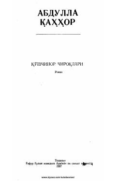

QCAbdulla Qahhorning mashhur "Qoʻshchinor chiroqlari" romani qishloq hayotiga bag'ishlangan.
Ushbu roman o'zbek adabiyotining yirik vakili Abdulla Qahhor қаламiga mansub bo'lib, qishloq hayoti va undagi ijtimoiy o'zgarishlarni ochib beradi. Asarda davr muammolari, qahramonlarning ichki kechinmalari va qishloqdagi voqealar jonli tasvirlangan.